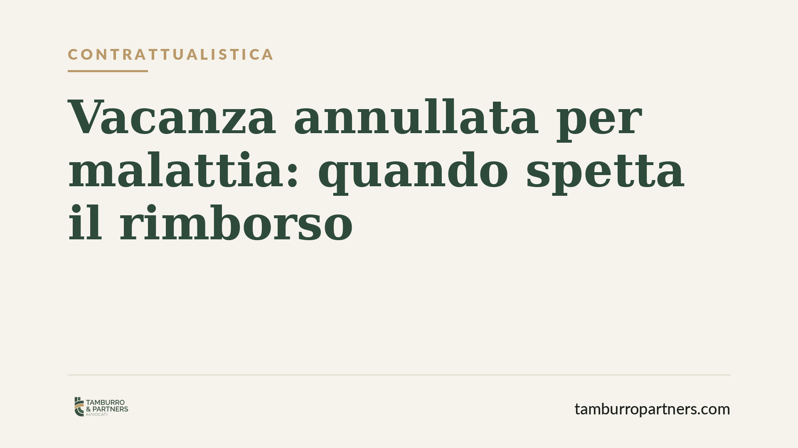

Vacanza annullata per malattia: quando spetta il rimborso
Un imprevisto di salute costringe a rinunciare al viaggio già pagato. La Corte di Cassazione ha chiarito che, in caso di malattia grave che impedisce di partire, il turista ha diritto al rimborso del prezzo. La chiave sta nella distinzione tra impossibilità sopravvenuta e semplice ripensamento. Ecco cosa cambia e come muoversi.

Il fatto
Un turista prenota e paga un pacchetto turistico. Prima della partenza, una malattia grave e improvvisa gli impedisce di viaggiare. L'agenzia rifiuta il rimborso, trattando la rinuncia come un recesso volontario, che di norma comporta la perdita totale o parziale del prezzo.
La Corte di Cassazione ha ricondotto il caso a un istituto diverso: l'impossibilità sopravvenuta della prestazione. La conseguenza è netta: il contratto si scioglie e il prezzo va restituito.
Inquadramento normativo
Due norme del Codice civile governano la vicenda. L'art. 1256 c.c. stabilisce che l'obbligazione si estingue quando la prestazione diventa impossibile per una causa non imputabile al debitore. L'art. 1463 c.c. aggiunge che, nei contratti a prestazioni corrispettive, la parte liberata dalla propria obbligazione non può pretendere quella dell'altra e deve restituire quanto già ricevuto secondo le regole dell'indebito.
Nel settore turistico si aggiunge l'art. 41 del Codice del turismo (D.Lgs. 79/2011), che disciplina il diritto del viaggiatore di recedere dal contratto di pacchetto turistico prima dell'inizio del viaggio. In presenza di circostanze inevitabili e straordinarie, il recesso può avvenire senza penale e con rimborso integrale.
Il punto giuridico centrale è la qualificazione della rinuncia. Se il turista sceglie liberamente di non partire, siamo di fronte a un recesso: si applicano le penali contrattuali. Se, invece, un evento oggettivo e non prevedibile — come una malattia grave — rende la fruizione del viaggio materialmente impossibile, opera l'impossibilità sopravvenuta e il prezzo deve essere restituito.
Impossibilità o recesso: la differenza che conta
La distinzione non è formale. Nel recesso, il turista esercita una facoltà: cambia idea, ha un impedimento superabile, preferisce non affrontare il viaggio. Qui le clausole penali del contratto trovano piena applicazione.
Nell'impossibilità sopravvenuta, invece, la prestazione turistica diventa inutilizzabile per un fatto estraneo alla volontà del viaggiatore. La Cassazione ha valorizzato in particolare la cosiddetta impossibilità di utilizzazione della prestazione da parte del creditore: il servizio esisterebbe anche, ma il turista non è in condizione di goderne per una causa a lui non imputabile.
La malattia rilevante deve avere caratteristiche precise: gravità, sopravvenienza e idoneità concreta a impedire il viaggio. Un malessere lieve o un impedimento organizzabile diversamente non integrano l'impossibilità.
Implicazioni pratiche
Per il turista, la pronuncia offre uno strumento in più rispetto alle sole clausole di recesso. Chi rinuncia per malattia grave documentata non è automaticamente tenuto a subire le penali previste dal contratto.
Per agenzie di viaggi e tour operator, il messaggio è di prudenza. Trattare ogni disdetta come recesso volontario, applicando in automatico le penali, espone al rischio di richieste di rimborso fondate. Occorre valutare la natura reale dell'impedimento.
Resta centrale la prova. Chi invoca l'impossibilità deve dimostrare, con documentazione medica adeguata, che la malattia era grave e realmente ostativa alla partenza nelle date previste.
Un'ulteriore avvertenza: molte polizze annullamento viaggio coprono proprio queste ipotesi. Verificare l'eventuale copertura assicurativa è spesso la via più rapida per ottenere ristoro, in parallelo o in alternativa alla richiesta diretta all'operatore.
Cosa fare in concreto
- Documentate la malattia con certificazione medica che attesti gravità e incompatibilità con il viaggio nelle date previste. La genericità indebolisce la posizione.
- Comunicate tempestivamente la rinuncia all'agenzia o al tour operator, per iscritto, indicando la causa e allegando la documentazione.
- Verificate la polizza annullamento eventualmente sottoscritta e attivate la procedura di sinistro nei termini previsti.
- Conservate ricevute e contratto, comprese le condizioni generali: la formulazione delle clausole di recesso incide sulla strategia da adottare.
- Chiedete il rimborso integrale qualificando la fattispecie come impossibilità sopravvenuta, non come recesso, se ne ricorrono i presupposti.
Ogni situazione va valutata sui documenti concreti. Consigliamo di far esaminare il contratto e la certificazione medica prima di formalizzare la richiesta, per impostare correttamente la qualificazione giuridica.
Disclaimer
Contributo informativo a cura di Tamburro & Partners - Avv. Giuseppe Tamburro. Non costituisce parere legale.
Ogni contratto ha il suo equilibrio.
Se vuoi una revisione delle clausole o una redazione su misura, scrivi allo studio. Ti rispondiamo entro un giorno lavorativo.